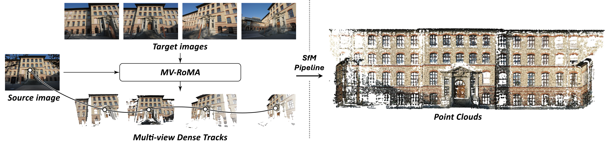
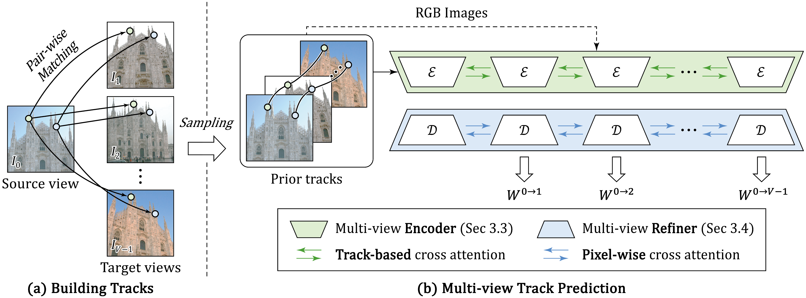

CVPR 2026

We propose MV-RoMa, a multi-view dense matching model that jointly estimates dense correspondences from a source image to multiple co-visible targets in a single forward pass. By embedding sparse geometric priors as track tokens into DINOv2 and applying efficient pixel-aligned attention at the refinement stage, MV-RoMa produces geometrically consistent multi-view tracks without the prohibitive cost of full cross-attention — enabling dense and accurate 3D reconstruction in the SfM pipeline.

Stage 1
Pairwise matches are distilled into compact multi-view tracks via clustering-based sampling, forming a sparse geometric prior.
Stage 2
Track tokens are injected into DINOv2 via attentional sampling, a track transformer, and attentional splatting — yielding view-consistent features.
Stage 3
Source-aligned target features enable pixel-aligned attention at the finest scale, refining correspondences without quadratic cross-attention cost.
@misc{lee2025mvroma,
title={MV-RoMa: From Pairwise Matching into Multi-View Track Reconstruction},
author={Jongmin Lee and Seungyeop Kang and Sungjoo Yoo},
year={2025},
}